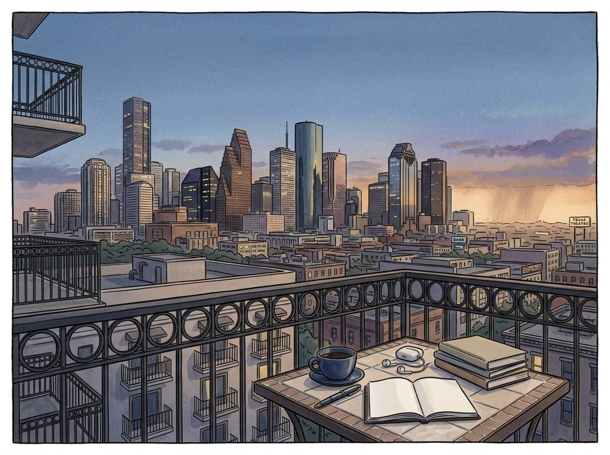

10/19

今日更新
Seinfeld
来源：Acquired
原链接：https://www.acquired.fm/episodes/seinfeld
状态：已读网页 transcript
这期播客深入剖析了《宋飞正传》这部现象级喜剧的商业奇迹，揭示了其如何在一个充满偶然性的历史时期，凭借创作者的极致匠心和对传统规则的颠覆，成为电视史上最赚钱的IP之一。它适合所有对娱乐产业、商业策略以及创意如何转化为巨大价值感兴趣的听众。
- 《宋飞正传》：一个跨越三十年的商业奇迹：《宋飞正传》在停播近三十年后，于2026年上半年仍被6000万美国人观看，Netflix在2019年以超过5亿美元的价格获得了其五年播放权，这笔交易创下了流媒体平台授权已停产剧集的最高纪录。播客指出，这部剧的经济结构和所有权模式，很大程度上是历史的“意外”。它既是旧时代电视的尾声，又是互联网新时代的开端，其成功源于创作者杰瑞·宋飞和拉里·大卫对产品卓越性的坚信，以及他们敢于挑战传统、从一小群忠实粉丝中逐渐积累起巨大资产的创业精神。
- 杰瑞·宋飞的单口喜剧之路与NBC的战略转型：杰瑞·宋飞自幼便展现出喜剧天赋，坚信喜剧是基因使然。他大学期间便开始在纽约的喜剧俱乐部磨练技艺，以奥运选手般的毅力反复排练、分析表演，将单口喜剧视为毕生追求。尽管早期在电视界遭遇挫折（如《本森》），但他在乔治·夏皮罗的帮助下，通过《今夜秀》获得全国曝光，并以每年100万美元的巡演收入成为明星。与此同时，NBC在总裁布兰登·塔蒂科夫的领导下，正经历战略转型，旨在吸引18-49岁的都市观众，并受到通用电气（GE）强调商业纪律的影响，这为宋飞的出现提供了契机。
- 拉里·大卫的加入与“关于如何获取素材的节目”：当NBC邀请杰瑞制作一档深夜特别节目时，他需要一位编剧，于是找到了老友拉里·大卫。当时的拉里41岁，事业不顺，曾因在《周六夜现场》发脾气辞职又假装无事发生（后来成为乔治·科斯坦扎的经典桥段）。两人在一家韩国熟食店和一家餐馆的日常对话中，萌生了“关于单口喜剧演员如何获取素材”的节目构想，而非后来被误解的“关于无所事事的节目”。这一构想让杰瑞决定在剧中扮演自己，以其独特的观察式幽默呈现生活细节。
- Fin-Syn规则：成就《宋飞正传》财富的关键：《宋飞正传》的巨大商业价值，离不开当时美国联邦通信委员会（FCC）的“金融利益与辛迪加规则”（Fin-Syn）。该规则禁止广播电视网拥有其播出的节目内容，从而将节目制作与播出分离。这意味着NBC无法直接拥有《宋飞正传》的知识产权，只能向制作公司购买播放许可。这种“赤字融资”模式下，制作公司承担前期亏损，但拥有节目的永久版权和未来辛迪加（重播）收益。这一规则在1993年被废除，但《宋飞正传》恰好诞生于其末期，成为这一制度下少数获得巨大成功的案例。
- 与Castle Rock的“黄金鹅”协议：由于NBC承诺制作杰瑞的节目，杰瑞和拉里在与制作公司谈判时拥有巨大筹码。他们选择了由罗布·莱纳等人创立、并由可口可乐（通过哥伦比亚影业）投资的Castle Rock娱乐公司。这份协议被认为是电视史上最有价值的交易之一：杰瑞和拉里各自获得了节目15%的股权，而通常创作者的股权比例远低于此。加上经理人夏皮罗/韦斯特的5%，以及索尼（收购哥伦比亚后获得发行权）的15%发行费，Castle Rock及其继任者拥有约50%的股权。这种股权结构确保了创作者能从节目数十亿美元的辛迪加利润中获得巨额回报。
Managing $525 Billion by Rethinking Wealth Management | Kurt MacAlpine, Corient
来源：David-Senra
原链接：https://www.davidsenra.com/episode/kurt-macalpine
状态：已读网页 transcript
这期播客深入探讨了Corient首席执行官Kurt MacAlpine如何将一家传统的加拿大资产管理公司CI Financial，转型为管理5250亿美元资产的全球最大非银行超高净值财富管理机构。他通过颠覆行业固有的激励结构，引入专业服务合伙人模式，并以客户为中心构建全面的服务生态，同时在公共市场剧烈波动中坚守信念，最终成功带领公司私有化。这期节目适合所有对商业模式创新、战略转型、领导力以及如何在逆境中坚持长期主义感兴趣的创业者、投资者和管理者。
- 临危受命与激进转型：从共同基金到财富管理：Kurt MacAlpine在39岁时首次担任CEO，接手了在多伦多证券交易所上市25年的CI Financial。当时，CI的主要利润来源是加拿大共同基金业务，每年EBITDA达数亿美元。然而，共同基金行业正面临ETF兴起、替代投资重要性增加等结构性逆风，增长前景趋缓。Kurt认为“原地不动是最危险的”，最大的风险是“不承担风险”。他向董事会提出了一个激进的转型计划：利用现有现金流，在全球范围内（首先在美国）建立一个专注于超高净值客户的财富管理业务，即后来的Corient，以实现公司的全球化和多元化。
- 揭示传统财富管理行业的“结构性缺陷”：Kurt指出，传统财富管理行业存在三大根本性缺陷。首先是行业结构呈“杠铃状”：一端是大型银行，虽资源丰富但受制于官僚主义和内部冲突，客户难以真正受益于其规模；另一端是小型本地公司，服务灵活但规模受限，难以提供全面的服务或获得顶级投资机会。中间存在巨大空白。其次，行业普遍采用“为顾问服务”而非“为客户服务”的模式，顾问是独立承包商，内部竞争而非协作。第三，这种模式导致了多重内部冲突：顾问之间、顾问与后台支持团队（如税务、财务规划）之间，以及顾问与中后台部门之间，都因报酬结构（顾问倾向于“囤积”收入）而产生摩擦，最终损害了客户利益和公司整体协作效率。
- Corient的颠覆性合伙人模式：以客户为中心：为解决行业缺陷，Corient借鉴了管理咨询、律所等“人本资本”行业的合伙人制，创建了财富管理领域首个真正的专业服务合伙人模式。其核心在于消除内部协作障碍，确保所有员工目标一致。Corient拥有约3000名员工，但只有一个薪酬计划，没有例外；只有一个损益表，没有内部费用分摊（chargebacks）。这意味着所有专家（如税务、规划师）都能无障碍地为客户提供服务，因为他们不是顾问的“成本中心”。此外，Corient坚持“仅收费受托人”标准，始终以客户的最佳利益为先，成为全球最大的以此标准运营的财富管理机构。
- 构建全面的超高净值服务生态：超越传统咨询：Corient的目标是成为全球最全面的超高净值家族财富管理服务提供商。其服务范围远超传统财富咨询，包括全球财务规划、财富传承、由175人组成的投资团队（涵盖传统和另类投资）、自有信托公司、由100多名全职会计师提供的税务咨询和实施服务，以及全套家族办公室服务。后者包括支付账单、外包CFO、定制报告、礼宾借贷、复杂房地产项目管理，甚至还有航空和艺术品管理业务。这些非核心业务并非利润中心，而是通过Corient的规模效应，以更优成本为客户提供独特价值，增强客户粘性，实现客户多代际留存，形成“Costco共享经济”般的竞争优势。
- 规模化收购策略：吸引年轻合伙人共创未来：Corient通过一系列收购实现了快速增长，目前管理着5250亿美元的客户资产。其收购策略并非为了让被收购方的创始人退休，而是吸引他们成为Corient的合伙人，继续创业旅程。对于被收购的小型精品财富管理公司而言，加入Corient意味着其客户能立即享受到Corient的规模优势（如更好的投资渠道、议价能力和更广泛的服务），而创始人也能避免自身业务发展到一定规模（如3-50亿美元）后，再投入巨资构建全面服务所带来的巨大风险。Corient的合伙人平均年龄在40多岁，员工平均年龄30多岁，远低于行业平均水平（60多岁），这反映了其吸引有长期发展抱负的年轻人才的策略。
What Makes Great Leaders & How to Live an Extraordinary Life | Dr. Jared Diamond
来源：Huberman Lab
状态：已读网页 transcript
{
- "takeaway": "本期播客是贾雷德·戴蒙德博士关于领导力本质和非凡人生哲学的深度访谈，它揭示了领导力背后复杂的偶然性、个人特质与历史进程的交织，并为听众提供了如何通过好奇心、跨学科学习和积极贡献来塑造有意义人生的深刻洞察。这期节目适合所有对历史、人类行为、领导力研究以及个人成长有兴趣的中文读者。",
- "memo_sections": [
- "title": "领导力的复杂性：偶然性与情境塑造",
- "body": "戴蒙德博士在节目伊始便挑战了传统上对领导力“天生论”的看法，强调了历史情境和偶然事件在塑造伟大领导者中的关键作用。他指出，领导者的崛起往往与特定的时代背景密不可分，例如希特勒在第一次世界大战后德国的混乱中获得权力，其成功并非完全源于个人魅力，而是利用了当时社会普遍的不满和渴望强权的心理。与此形成对比的是，像哈里·杜鲁门这样看似“不可能的领导者”，却在罗斯福总统去世后，凭借其正直和务实，成功应对了二战后的复杂局面。戴蒙德通过其著作《利润、先知、教练与国王：领导者（何时）重要？》探讨了领导者在不同领域（政治、宗教、商业、体育）的影响力边界，认为领导力是个人特质与外部环境复杂互动的产物，而非单一因素决定。"
- },
The Deathbed Doctor: Weeks Before Death, Patients Start Having Visions! | Dr Christopher Kerr
来源：Diary of a CEO
原链接：
状态：已读完整音频 transcript
这期播客深入探讨了临终体验的真实面貌，揭示了死亡并非充满痛苦和遗憾，而是可能伴随着深刻的连接、爱与平和的转化过程，适合所有对生命终点、人际关系和个人意义有思考的中文读者。
- 临终幻象：死亡边缘的真实体验：克里斯托弗·克尔医生在临终关怀领域工作三十年，采访了约1500名临终病人，发现近90%的人在生命最后阶段会出现异常真实且强烈的梦境或幻象。这些体验与谵妄（一种混乱且令人痛苦的精神状态）截然不同，患者对其真实性评价高达10分（满分10分），感觉就像真实发生。这些幻象的主题通常是与已故亲人的重逢，特别是那些曾无条件爱过他们的人。随着死亡临近，这些体验的频率和沉浸感会增加。克尔医生最初认为这只是记忆的重现，但现在他相信这远不止于此，它暗示着一种持续的意识和爱的可及性，超越了单纯的生理功能。
- 颠覆传统认知：临终关怀的真相：社会对死亡存在诸多误解。克尔医生指出，临终的痛苦远低于人们的普遍预期，且大部分疼痛是可以有效管理的，但缺乏相关对话令人遗憾。此外，人们普遍认为临终者会充满遗憾，但克尔医生的研究表明，在生命终点，遗憾并非核心关注点，许多人会放下这些。进食和饮水的停止是自然过程，并不会带来痛苦。他强调，医学界往往专注于“战胜死亡”，而非“照护临终者”，导致对患者真实体验的忽视。对临终者而言，舒适的睡眠至关重要，因为无法舒适入睡便无法安然离世。
- 生命终点：真正重要的不是成就：克尔医生通过对比医学生和临终患者对“生命终点最重要之事”的看法，揭示了深刻的差异。医学生常认为成就、遗产和意义是关键，而临终患者的真实优先事项是：不成为家人的负担、与亲友共度时光（关系是核心）、疼痛管理、与“神”或宇宙的平和（一种存在主义的平静）、保持心智清醒，以及在家中离世。他强调，在生命终点，人们会变得无私，关注他人而非自我。这与幸福科学的研究不谋而合：真正的幸福源于为他人付出。死亡剥去了所有伪装和肤浅，揭示了人类最本质的连接与相互依存的价值。
- 希望的蜕变与爱的永恒：希望在临终过程中并不会消失，而是会发生美丽的转变。最初，患者希望治愈疾病；随着接受，希望转变为舒适和与家人相处的时间；最终，希望升华为对他人（特别是所爱之人）的福祉。这种无私的希望是人类本性的美好体现。克尔医生强调的另一个核心教训是“爱在肉体消逝后依然存在”。临终幻象中与逝去亲人的重逢，证明了这种爱的连接超越了物理界限。死亡过程也常常能治愈旧伤，让家庭成员放下积怨，重新连接，甚至让那些一生挣扎于内心创伤的人在最后时刻获得平静与完整。
- 儿童的临终：无畏与自我疗愈：儿童面对死亡的方式与成人截然不同，展现出令人惊叹的勇气和接受度。他们不纠结于死亡的终结性，而是自然地接受现状，不谈论遗憾或“如果当初”。儿童拥有强大的自我疗愈能力，常在临终幻象中见到已故的宠物或亲人，从中获得被爱和不孤单的慰藉。他们似乎能本能地理解自己的状况，无需他人告知。最令人动容的是，尽管生命被剥夺，儿童却展现出惊人的无私，常常反过来关心和保护身边的亲人，例如视频中13岁的杰西卡，她看到“天使”后感到平静，却不愿告诉母亲，怕母亲担心。
Don Wilson on the GPU Market's Trillion Dollar Question
来源：Odd Lots
原链接：https://omny.fm/shows/odd-lots/don-wilson-on-the-gpu-markets-trillion-dollar-question
状态：已读完整音频 transcript
这期播客深入探讨了GPU期货市场的兴起及其在AI时代对冲算力波动风险的必要性，揭示了监管障碍、技术挑战以及金融市场创新（如永续合约）如何重塑资本效率和市场参与。对于关注AI基础设施发展、金融衍生品创新及市场监管动态的听众，本期节目提供了宝贵的洞察。
- AI市场波动与算力对冲的紧迫性：播客开篇，DRW创始人兼CEO Don Wilson指出，尽管近期AI领域出现了一些“小波动”（如CoreWeave债券收益率高达15%、Anthropic投资者会议前的紧张情绪），但这只是高速增长市场中的正常现象，并非AI热潮的减速。他强调，这些波动恰恰凸显了风险管理产品的巨大需求。对于“新云”（NeoCloud）公司而言，如果能通过GPU期货对冲未来的算力收入流和硬件成本，其资本成本将显著降低，从而能更好地服务信用资质较低的客户，推动整个AI生态系统的发展。
- GPU期货的监管困境与指数构建：GPU期货的推出并非一帆风顺。目前，美国商品期货交易委员会（CFTC）正就相关产品开放评论期，上市日期可能推迟。主持人对监管机构的“国家安全”顾虑表示不解，Don Wilson也无法给出明确解释，但提到可能与指数的稳健性有关。他解释说，DRW旗下的Silicon Data团队致力于从众多“新云”提供商收集海量按需算力数据，构建符合国际证监会组织（IOSCO）标准的指数。尽管许多GPU交易通过双边协议进行，价格不透明，但Silicon Data的指数专注于透明的按需算力市场，力求反映真实的市场价格。
- GPU价值的“万亿美元问题”与对冲需求：GPU的价值轨迹是AI时代面临的“万亿美元问题”。Don Wilson指出，没有人能预测B200等GPU在未来四五年后的确切价值，因为技术迭代迅速，硬件效率不断提升，可能导致现有GPU迅速贬值。因此，GPU期货的存在至关重要，它能让市场参与者对冲这种长期不确定性。他举例说明，一年前H100的按需价格曾持续下跌，市场质疑GPU期货的必要性，但随后由于新AI模型对推理算力需求的激增，H100价格迅速反弹，再次证明了算力市场的剧烈波动性以及对冲工具的不可或缺。
- 算力异质性与期货市场的演进：播客讨论了GPU算力的异质性问题，即不同GPU型号（如H100、B200、AMD、Cerebras、TPU）和软件栈可能导致价值差异，这是否会阻碍期货市场的形成。Don Wilson认为，即使只针对H100或B200等主流GPU，其交易量也足以支撑独立的期货合约。他强调，不同GPU的性能和成本高度相关，因此一个期货市场可以有效捕捉整体趋势。展望未来，他预见可能会出现针对GPU“输出”的期货合约（他称之为“Token Futures”或“Crunch Spread”），类似于石油行业的“裂解价差”，即对冲算力服务而非硬件本身的价格波动。
- 英伟达的未来与DRW的AI应用：关于英伟达（Nvidia）在GPU市场的统治地位，Don Wilson认为，虽然英伟达可能难以维持其当前的超高市场份额，但鉴于AI市场的整体持续增长，英伟达作为一家公司仍将继续壮大。此外，播客也提及了DRW自身在AI技术应用上的进展。Don Wilson表示，DRW内部对AI的采用已更加深入，尤其是在一线业务中。公司的“token预算”呈指数级增长，但他们正积极优化推理请求的路由策略，确保并非所有请求都必须使用最前沿、最昂贵的模型，从而最大程度地降低token消耗。
历史精选
Special: Acquired x Indie Hackers
来源：Acquired
状态：已读音频详细听记
这期《Acquired》与《Indie Hackers》的特别节目，深入探讨了“弱者创业者”（Indie Hackers）在互联网时代如何通过聚焦小众市场、持续迭代和社区赋能，实现从生存到被巨头Stripe战略性收购的非凡旅程。它不仅揭示了Courtland Allen的个人成长与创业哲学，更展现了互联网如何为数百万普通人打开了创造价值、实现财务自由的新路径，尤其适合那些渴望摆脱传统“独角兽”模式、寻求独立创业和社区力量的中文读者。
- 互联网时代的“弱者创业”哲学：本期节目以Courtland Allen的Indie Hackers故事为核心，挑战了传统科技创业中“追求独角兽”的单一叙事。Courtland提出，在全球30亿互联网用户的巨大市场中，即使是极其小众的需求也能汇聚成庞大的潜在市场。他强调，互联网赋予了普通人以极低成本触达全球用户的能力，使得人们可以坐在家中，穿着睡裤，创造出对特定社区有价值的产品，并以此致富。这种“弱者创业”模式与过去受地理限制的小企业截然不同，它不再仅仅是为了养家糊口，而是拥有巨大的财富增长潜力。Indie Hackers的理念是，每个人都能找到一个具体的需求，并在互联网上建立自己的事业，即使是百万分之一或千万分之一的用户，也能构成一个可观的市场。
- Courtland Allen的早期启蒙与创业磨砺：Courtland Allen的成长经历为他的创业之路奠定了基础。他出生于一个支持性的中产家庭，母亲是90年代的电脑销售商，使他从小就接触电脑和互联网，并被视为“电脑小天才”。这种早期技术启蒙和积极反馈，让他10岁时就立志成为“下一个比尔·盖茨”。高中时父亲的离世，让他过早地认识到生活的残酷和独立生存的重要性，培养了坚韧的品格。在麻省理工学院（MIT）期间，他多次尝试创业，并申请Y Combinator（YC）。他发现早期互联网是一个“蓝海”，通过将现有概念组合（如F-mail将Gmail功能集成到Facebook），即使技术粗糙也能获得关注。Hacker News在YC早期扮演了重要角色，创始人Paul Graham通过它分享创业理念，并要求申请者在上面发表有见地的评论，这为Courtland提供了学习和展示的平台。
- YC的“生存法则”与创业心态转变：Courtland在YC的经历反映了早期创业环境的狂热与残酷。当时，VC普遍追求“独角兽”级别的公司，增长是唯一目标，盈利次之。他与联合创始人开发的Taskforce项目，虽然有创新，但在Demo Day上因增长不够快而未获青睐。他目睹了大量早期创业公司在夏季倒下，深刻体会到“生存”的重要性。Paul Graham的“爬山算法”理论——不断寻找下一个更高的山峰，即使只是局部最优解，最终也能导向全局最优解——对他产生了深远影响。这让他意识到，创业并非一步登天，而是需要小步前进，利用现有优势克服劣势，即使暂时失去一些高度，也要坚持下去，直到找到更好的方向。这种从“做大”到“不倒下”的心态转变，成为他后续创业的核心策略。
- Indie Hackers的诞生：从痛点到社区：在多次创业尝试均未达到预期后，Courtland反思了之前的错误，尤其是“花费过多时间编码”和“原地踏步”。他意识到创业成功需要一定的尝试次数，关键在于不要在成功次数前放弃。在做合同工期间，他发现Hacker News上许多创业故事缺乏关键细节（如收入、想法来源），导致社区成员不断追问。这促使他产生了创建一个“更好的”独立开发者故事分享平台的想法，整合所有关键信息，降低学习门槛。他决定在三周内从零开始构建Indie Hackers网站，避免依赖第三方平台以保持品牌独立性和控制权。网站选择深蓝色调以区别于其他平台，并从第一天起就重视邮件列表的建立，将其作为获取内容和触达读者的关键渠道。Indie Hackers的诞生，正是基于解决信息不对称这一实际痛点。
- 增长策略、盈利模式与“向有预算者销售”：Indie Hackers初期专注于增长，而非立即盈利。Courtland认为，构建产品相对容易，但让人们“关心”并“找到”产品才是真正的挑战。他通过在用户聚集的Hacker News等平台分享内容，并利用邮件列表和Twitter进行触达，迅速积累了大量用户。在网站上线约3个月后，他开始尝试盈利，意外地获得了一家公司每月750美元的赞助，这让他意识到赞助是一种可行的盈利模式。他总结出一个重要的创业教训：要向“有预算”的人销售。这意味着寻找那些已经愿意花钱解决某个问题的客户，而不是去“教育”他们为什么需要你的产品。这种策略大大提高了销售效率，也为Indie Hackers后续的商业化奠定了基础，使其能够吸引到有营销预算的大公司作为赞助商。
Intuitive Surgical: Robotic Precision - [Business Breakdowns, EP.155]
来源：Business Breakdowns
原链接：https://joincolossus.com/episodes/61058256/thomas-robots-behind-the-knife
状态：已读网页 transcript
本期播客深入剖析了直觉外科（Intuitive Surgical）及其开创性的达芬奇（da Vinci）手术机器人系统，揭示了其如何通过技术创新、独特的商业模式和高筑的竞争壁垒，成为医疗设备领域的巨头。对于关注医疗科技发展、商业模式创新以及长期投资价值的听众，本期节目提供了宝贵的洞察。
- 手术的演进与达芬奇的诞生：播客首先回顾了外科手术从古至今的演变历程，从传统开放手术到微创腹腔镜手术，再到机器人辅助手术的兴起。直觉外科公司（Intuitive Surgical）的达芬奇系统正是这一演进中的里程碑。该系统旨在解决传统腹腔镜手术的局限性，例如二维视野、器械活动受限以及医生操作疲劳等问题。达芬奇系统通过提供三维高清视野、更灵活的机械臂和消除医生手部颤抖的功能，显著提升了手术的精准度和安全性，同时减轻了外科医生的负担，标志着手术进入了一个全新的时代。
- 达芬奇系统的核心优势与早期挑战：达芬奇系统的工作原理是让外科医生通过控制台操作机械臂，将医生的手部动作精确地转化为机器人器械的精细操作。其核心优势包括：提供沉浸式三维高清视野，远超传统腹腔镜的二维图像；机械臂具有七个自由度，模拟人手腕的灵活度，能完成传统器械难以实现的操作；以及系统能过滤医生手部颤抖，确保操作的稳定性。然而，达芬奇系统在早期也面临诸多挑战，包括高昂的设备成本、医生学习曲线长、以及严格的监管审批流程。直觉外科通过持续的临床验证和医生培训，逐步克服了这些障碍，赢得了医疗界的信任。
- 独特的商业模式与经济护城河：直觉外科的商业模式被形象地比喻为“剃刀与刀片”模式。医院首先需要购买昂贵的达芬奇手术系统（“剃刀”），随后在每次手术中，医院都需要购买直觉外科生产的专用一次性器械和耗材，并支付系统维护服务费（“刀片”）。这种模式确保了公司持续的经常性收入流。此外，达芬奇系统还构建了强大的经济护城河：高昂的初始投资和医生培训成本形成了高转换成本；庞大的装机量和手术数据积累形成了网络效应；以及持续的技术创新和专利保护，都使其在市场中占据了难以撼动的领先地位。
- 技术迭代与研发投入：为了保持其市场领导地位，直觉外科持续投入巨额资金进行研发。播客中提到了达芬奇系统的多次迭代，例如第五代系统的发展，旨在进一步提升手术效率、降低成本并拓展应用范围。公司的研发不仅限于硬件升级，还包括软件优化、人工智能辅助、数据分析以及数字创新，以期为医生提供更智能、更个性化的手术解决方案。这种对技术创新的不懈追求，是直觉外科能够长期保持竞争优势的关键因素，也使其能够不断拓展新的手术适应症和市场空间。
- 竞争格局与全球扩张：尽管直觉外科在机器人辅助手术市场占据主导地位，但随着市场潜力的显现，竞争也日益激烈。一些新的竞争者开始进入这一领域，试图挑战直觉外科的霸主地位。然而，由于直觉外科强大的品牌影响力、庞大的装机量、成熟的医生培训体系以及深厚的专利壁垒，新进入者面临巨大的挑战。在市场扩张方面，直觉外科正积极推动全球化战略，尤其是在新兴市场寻找增长机会。这些地区对手术机器人技术的需求日益增长，为公司提供了广阔的市场前景。